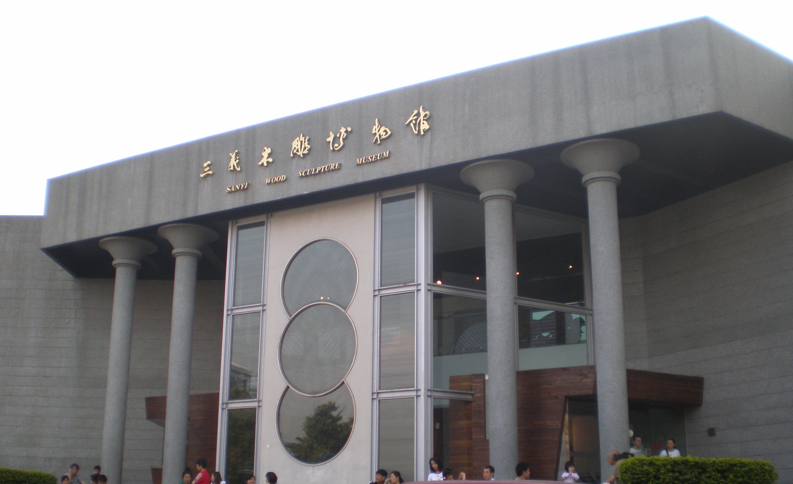
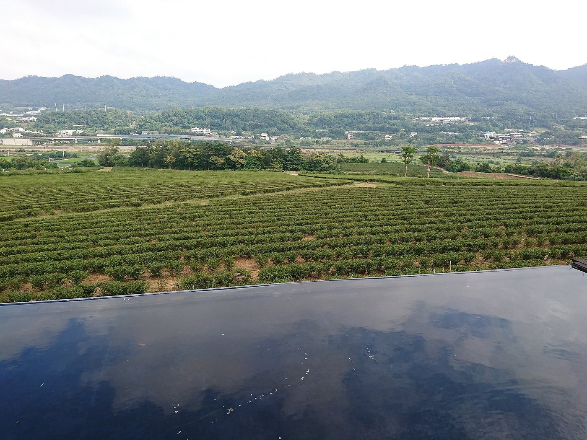
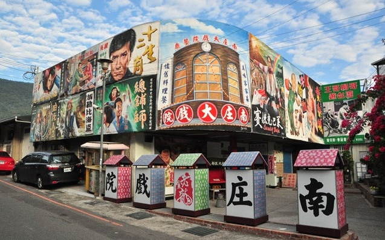
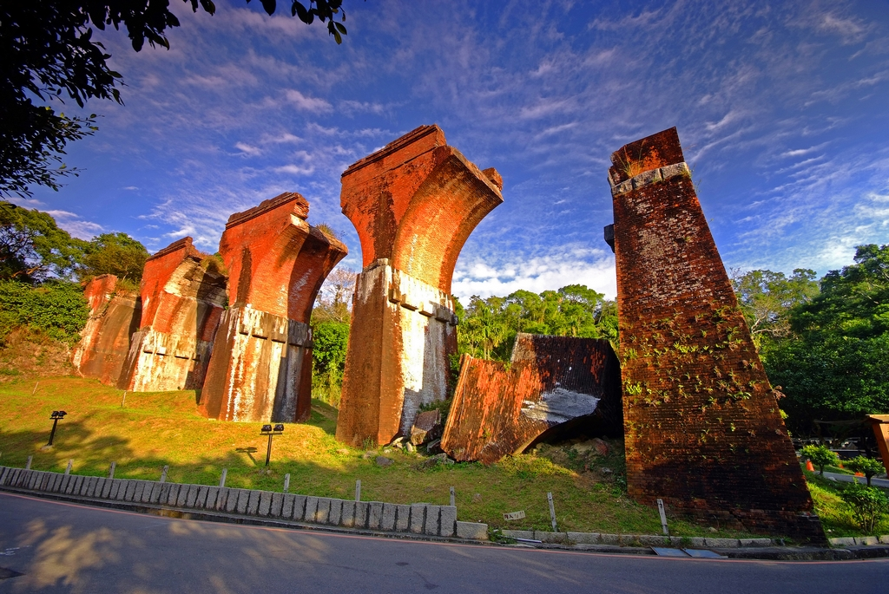

探索苗栗
以客家文化著稱，擁有大湖草莓園和三義木雕博物館，是文化與自然的融合地。以下是苗栗著名的景點:

三義木雕博物館
三義木雕發展的起源，是鄉民吳進寶先生於西元1918年撿拾枯木回家加工做擺飾，被日本人視為藝術品而喜歡，吳進寶進而與日本人研究如何大量加工生產這些枯木藝術品。早期，三義的木雕多以神像、工藝品為主，近年來，由於個人風格的藝術創作風氣大開，各式各樣題材的雕刻作品不斷的推陳出新，令人嘆為觀止！「三義木雕博物館」臺灣唯一以木雕為專題的公立博物館，該館以收藏展示木雕藝術精品為主，包括各國土著的民族木雕與臺灣木雕藝術等。

銅鑼茶廠
銅鑼茶廠地處丘陵台地，日夜溫差大濕度高，所生長的茶葉厚實，主要茶產為東方美人茶、蜜香紅茶、綠茶有提供採茶diy（要先預約），體驗入園費100元，可全額抵消費有餐食、茶款可以內用，從小小的茶廠看出去，整片茶園綠的愜定時還有不同火車經過

南庄老街
南庄老街位於苗栗縣南庄鄉永昌宮附近的中正路及一旁小巷內，緊鄰南庄遊客中心，當地最夯的伴手禮就是特產桂花釀，因此又稱桂花巷，必嚐的小吃美食包含豬籠粄、狗薑粽、桂花冰鎮湯圓、桂花梅、擂茶、滷豆干、客家菜等。

龍騰斷橋
龍騰舊稱「魚藤坪」，相傳先民在開墾初時，鯉魚潭有鯉魚精危害地方，鄉民苦不堪言。為了克制鯉魚精作怪，遂在龍騰山區遍植魚藤，同時，又將東面的高山稱為關刀山，用意是藉關刀山斬魚藤，以毒殺鯉魚精，最後魚怪果然不再危害，居民從此安居樂業。至臺灣二戰後設村，村民認為「魚藤」不雅而改名為龍騰。西元1935年4月21日清晨，臺灣中部大地震，震央即在關刀山附近，三義地區受災慘重，巍峨的山線鐵路龍溪橋完全震毀，震後在原橋西側另建新橋，遺下拱型橋柱，挺立在烈日風霜裡，供後人憑弔。搭火車經三義時，龍騰斷橋遺跡打眼前掠過，令人印象深刻。